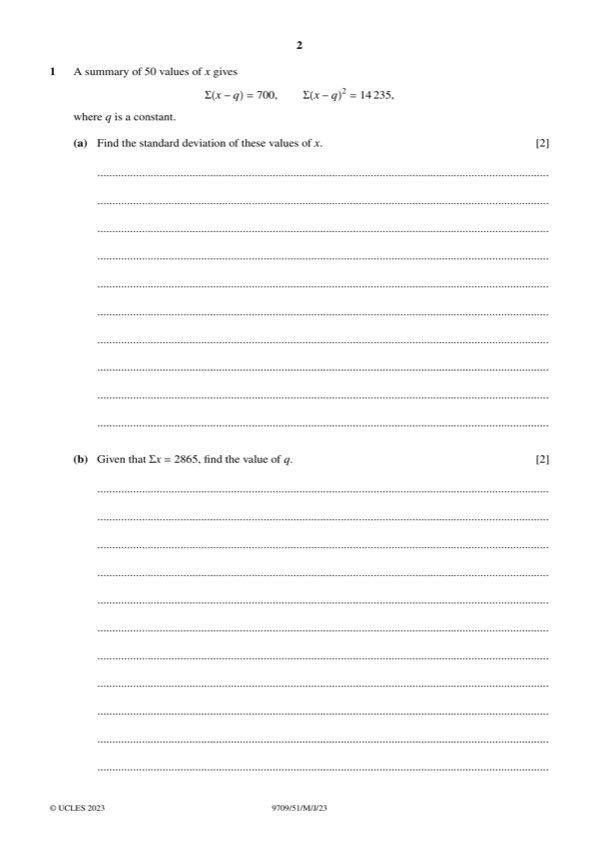
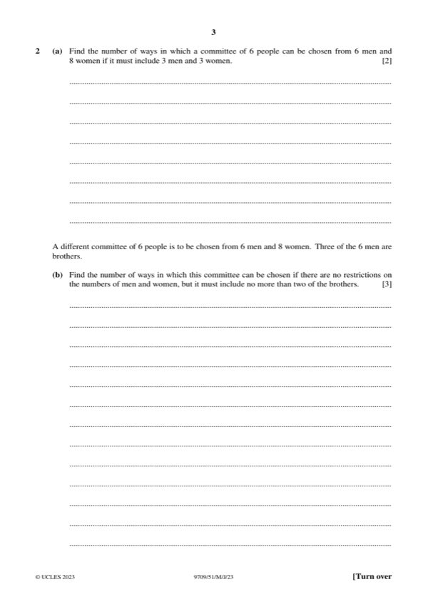
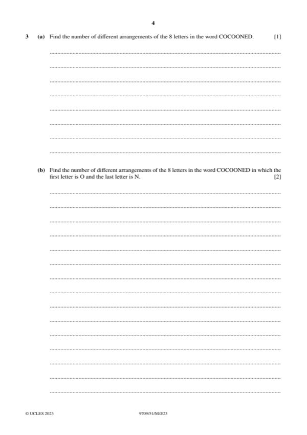
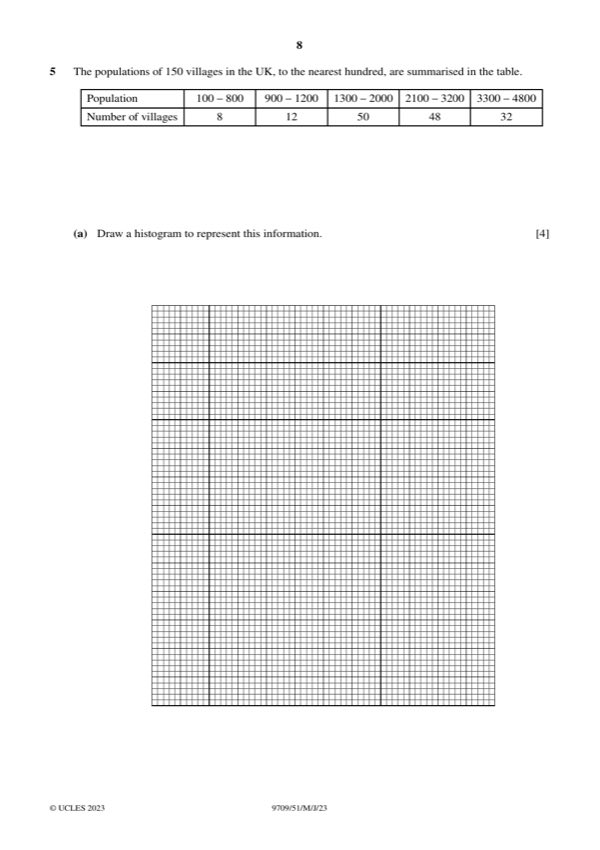
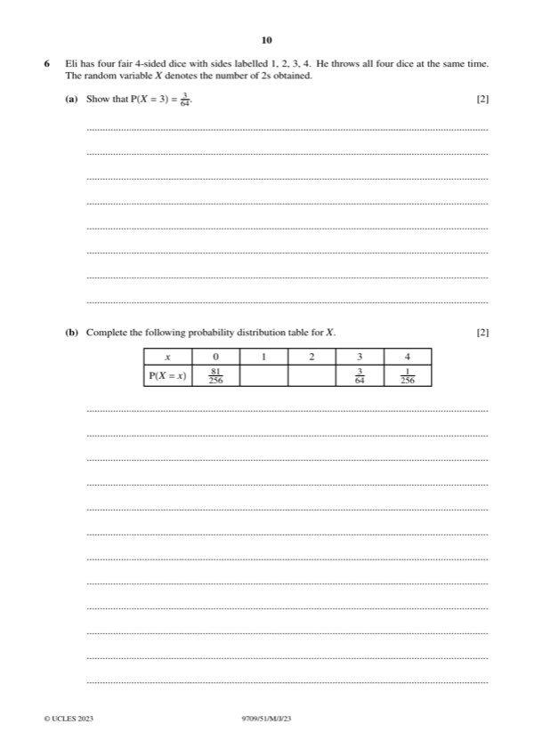
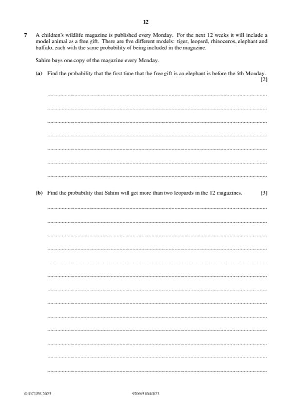

Question 0
Part 0 — solution
- [B1] Obtain/use: brothers [3C0] 11C6 462
Mark points
- [B1] Obtain/use: brothers [3C0] 11C6 462
Step-by-step solutions based on the mark scheme (not a mark-scheme dump).
Part 0 — solution

Part 1(a) — solution
Part 1 — solution
Part 1 — solution
Part 1 — solution
Part 1 — solution
Part 1 — solution

Part 2 — solution
Part 2 — solution
Part 2(a) — solution
Answer: 6
Part 2 — solution
Part 2 — solution
Part 2 — solution

Part 3 — solution
Part 3(a) — solution
Part 3 — solution
Part 3 — solution
Part 4(a) — solution
Part 4 — solution
Part 4 — solution
Part 4 — solution

Part 5(a) — solution
Part 5 — solution
Part 5 — solution

Part 6(b) — solution
Answer: B1 27
Part 6(d) — solution
Answer: 256 8

Part 7(a) — solution
Part 7(b) — solution
Part 7(c) — solution
Part 8 — solution
Part 12 — solution
Part 14 — solution
Part 24 — solution
Answer: A1 · 625
Part 24 — solution
Answer: A1 · 625
Part 27 — solution
Part 50 — solution
Part 64 — solution
Part 64 — solution
Part 67 — solution
Answer: 256 256
Part 81 — solution
Answer: 128